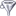
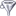

Svarog oferuje kontrolę  sposobu wyświetlania wielokanałowego EEG, m. in.:
sposobu wyświetlania wielokanałowego EEG, m. in.:
 antialiasing,
antialiasing,  linie,
linie,
 powiększanie fragmentu sygnału (zoom),
[
powiększanie fragmentu sygnału (zoom),
[ ] oglądanie widma wybranego fragmentu sygnału,
] oglądanie widma wybranego fragmentu sygnału,
 definiowanie własnych montaży i
filtrów częstościowych, włączanie
definiowanie własnych montaży i
filtrów częstościowych, włączanie
 i wyłączanie

filtrów,
oznaczanie wybranych fragmentów sygnału
i wyłączanie

filtrów,
oznaczanie wybranych fragmentów sygnału  ,
definiowanie własnych oznaczeń
,
definiowanie własnych oznaczeń  ,
jak również klasyczne i najnowsze metody analizy sygnałów:
uśrednianie potencjałów wywołanych (EP), estymację spektrogramu (STFT),
transformacji falkowej (WT), kierunkowej funkcji przejścia (DTF) i analizę składników niezależnych (ICA)
— aż po rejestrację
,
jak również klasyczne i najnowsze metody analizy sygnałów:
uśrednianie potencjałów wywołanych (EP), estymację spektrogramu (STFT),
transformacji falkowej (WT), kierunkowej funkcji przejścia (DTF) i analizę składników niezależnych (ICA)
— aż po rejestrację 
 sygnału EEG i wideo
sygnału EEG i wideo
 .
.
Pomoc Svaroga obejmuje m.in. opis funkcji, dostępnych w kolejnych menu: